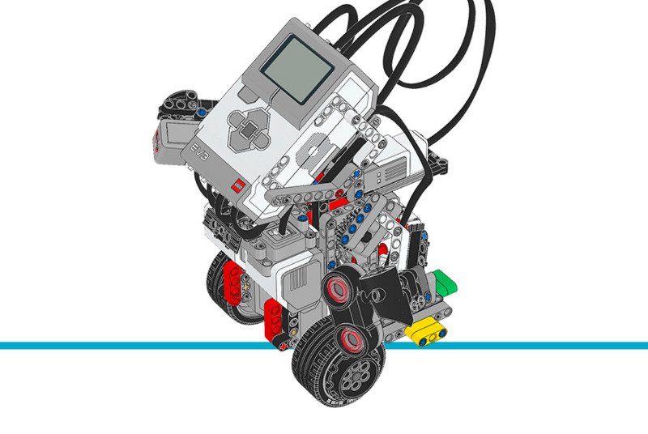

Gyro Boy¶
This program makes Gyro Boy balance on its two wheels using the
GyroSensor. The duty cycle of the
motors is continuously adjusted as a function of the gyro angle, the gyro
speed, the motor angles, and the motor speeds, in order to maintain balance.
This program also uses a Python generator function (a function that uses yield instead of return) as a coroutine. Coroutines are a form of cooperative multitasking that allows the robot perform multiple tasks at the same time. This lets you drive it around while it is busy balancing.
Building instructions
Click here to find all building instructions for the Core Set Models, or use this link to go to Gyro Boy directly.

Figure 30 Gyro Boy
Example program
#!/usr/bin/env pybricks-micropython
"""
Example LEGO® MINDSTORMS® EV3 Gyro Boy Program
----------------------------------------------
This program requires LEGO® EV3 MicroPython v2.0.
Download: https://education.lego.com/en-us/support/mindstorms-ev3/python-for-ev3
Building instructions can be found at:
https://education.lego.com/en-us/support/mindstorms-ev3/building-instructions#building-core
"""
from ucollections import namedtuple
import urandom
from pybricks.hubs import EV3Brick
from pybricks.ev3devices import Motor, UltrasonicSensor, ColorSensor, GyroSensor
from pybricks.parameters import Port, Color, ImageFile, SoundFile
from pybricks.tools import wait, StopWatch
# Initialize the EV3 brick.
ev3 = EV3Brick()
# Initialize the motors connected to the drive wheels.
left_motor = Motor(Port.D)
right_motor = Motor(Port.A)
# Initialize the motor connected to the arms.
arm_motor = Motor(Port.C)
# Initialize the Color Sensor. It is used to detect the colors that command
# which way the robot should move.
color_sensor = ColorSensor(Port.S1)
# Initialize the gyro sensor. It is used to provide feedback for balancing the
# robot.
gyro_sensor = GyroSensor(Port.S2)
# Initialize the ultrasonic sensor. It is used to detect when the robot gets
# too close to an obstruction.
ultrasonic_sensor = UltrasonicSensor(Port.S4)
# Initialize the timers.
fall_timer = StopWatch()
single_loop_timer = StopWatch()
control_loop_timer = StopWatch()
action_timer = StopWatch()
# The following (UPPERCASE names) are constants that control how the program
# behaves.
GYRO_CALIBRATION_LOOP_COUNT = 200
GYRO_OFFSET_FACTOR = 0.0005
TARGET_LOOP_PERIOD = 15 # ms
ARM_MOTOR_SPEED = 600 # deg/s
# Actions will be used to change which way the robot drives.
Action = namedtuple('Action ', ['drive_speed', 'steering'])
# These are the pre-defined actions
STOP = Action(drive_speed=0, steering=0)
FORWARD_FAST = Action(drive_speed=150, steering=0)
FORWARD_SLOW = Action(drive_speed=40, steering=0)
BACKWARD_FAST = Action(drive_speed=-75, steering=0)
BACKWARD_SLOW = Action(drive_speed=-10, steering=0)
TURN_RIGHT = Action(drive_speed=0, steering=70)
TURN_LEFT = Action(drive_speed=0, steering=-70)
# The colors that the color sensor can detect are mapped to actions that the
# robot can perform.
ACTION_MAP = {
Color.RED: STOP,
Color.GREEN: FORWARD_FAST,
Color.BLUE: TURN_RIGHT,
Color.YELLOW: TURN_LEFT,
Color.WHITE: BACKWARD_FAST,
}
# This function monitors the color sensor and ultrasonic sensor.
#
# It is important that no blocking calls are made in this function, otherwise
# it will affect the control loop time in the main program. Instead, we yield
# to the control loop while we are waiting for a certain thing to happen like
# this:
#
# while not condition:
# yield
#
# We also use yield to update the drive speed and steering values in the main
# control loop:
#
# yield action
#
def update_action():
arm_motor.reset_angle(0)
action_timer.reset()
# Drive forward for 4 seconds to leave stand, then stop.
yield FORWARD_SLOW
while action_timer.time() < 4000:
yield
action = STOP
yield action
# Start checking sensors on arms. When specific conditions are sensed,
# different actions will be performed.
while True:
# First, we check the color sensor. The detected color is looked up in
# the action map.
new_action = ACTION_MAP.get(color_sensor.color())
# If the color was found, beep for 0.1 seconds and then change the
# action depending on which color was detected.
if new_action is not None:
action_timer.reset()
ev3.speaker.beep(1000, -1)
while action_timer.time() < 100:
yield
ev3.speaker.beep(0, -1)
# If the new action involves steering, combine the new steering
# with the old drive speed. Otherwise, use the entire new action.
if new_action.steering != 0:
action = Action(drive_speed=action.drive_speed,
steering=new_action.steering)
else:
action = new_action
yield action
# If the measured distance of the ultrasonic sensor is less than 250
# millimeters, then back up slowly.
if ultrasonic_sensor.distance() < 250:
# Back up slowly while wiggling the arms back and forth.
yield BACKWARD_SLOW
arm_motor.run_angle(ARM_MOTOR_SPEED, 30, wait=False)
while not arm_motor.control.done():
yield
arm_motor.run_angle(ARM_MOTOR_SPEED, -60, wait=False)
while not arm_motor.control.done():
yield
arm_motor.run_angle(ARM_MOTOR_SPEED, 30, wait=False)
while not arm_motor.control.done():
yield
# Randomly turn left or right for 4 seconds while still backing
# up slowly.
turn = urandom.choice([TURN_LEFT, TURN_RIGHT])
yield Action(drive_speed=BACKWARD_SLOW.drive_speed,
steering=turn.steering)
action_timer.reset()
while action_timer.time() < 4000:
yield
# Beep and then restore the previous action from before the
# ultrasonic sensor detected an obstruction.
action_timer.reset()
ev3.speaker.beep(1000, -1)
while action_timer.time() < 100:
yield
ev3.speaker.beep(0, -1)
yield action
# This adds a small delay since we don't need to read these sensors
# continuously. Reading once every 100 milliseconds is fast enough.
action_timer.reset()
while action_timer.time() < 100:
yield
# If we fall over in the middle of an action, the arm motors could be moving or
# the speaker could be beeping, so we need to stop both of those.
def stop_action():
ev3.speaker.beep(0, -1)
arm_motor.run_target(ARM_MOTOR_SPEED, 0)
while True:
# Sleeping eyes and light off let us know that the robot is waiting for
# any movement to stop before the program can continue.
ev3.screen.load_image(ImageFile.SLEEPING)
ev3.light.off()
# Reset the sensors and variables.
left_motor.reset_angle(0)
right_motor.reset_angle(0)
fall_timer.reset()
motor_position_sum = 0
wheel_angle = 0
motor_position_change = [0, 0, 0, 0]
drive_speed, steering = 0, 0
control_loop_count = 0
robot_body_angle = -0.25
# Since update_action() is a generator (it uses "yield" instead of
# "return") this doesn't actually run update_action() right now but
# rather prepares it for use later.
action_task = update_action()
# Calibrate the gyro offset. This makes sure that the robot is perfectly
# still by making sure that the measured rate does not fluctuate more than
# 2 deg/s. Gyro drift can cause the rate to be non-zero even when the robot
# is not moving, so we save that value for use later.
while True:
gyro_minimum_rate, gyro_maximum_rate = 440, -440
gyro_sum = 0
for _ in range(GYRO_CALIBRATION_LOOP_COUNT):
gyro_sensor_value = gyro_sensor.speed()
gyro_sum += gyro_sensor_value
if gyro_sensor_value > gyro_maximum_rate:
gyro_maximum_rate = gyro_sensor_value
if gyro_sensor_value < gyro_minimum_rate:
gyro_minimum_rate = gyro_sensor_value
wait(5)
if gyro_maximum_rate - gyro_minimum_rate < 2:
break
gyro_offset = gyro_sum / GYRO_CALIBRATION_LOOP_COUNT
# Awake eyes and green light let us know that the robot is ready to go!
ev3.speaker.play_file(SoundFile.SPEED_UP)
ev3.screen.load_image(ImageFile.AWAKE)
ev3.light.on(Color.GREEN)
# Main control loop for balancing the robot.
while True:
# This timer measures how long a single loop takes. This will be used
# to help keep the loop time consistent, even when different actions
# are happening.
single_loop_timer.reset()
# This calculates the average control loop period. This is used in the
# control feedback calculation instead of the single loop time to
# filter out random fluctuations.
if control_loop_count == 0:
# The first time through the loop, we need to assign a value to
# avoid dividing by zero later.
average_control_loop_period = TARGET_LOOP_PERIOD / 1000
control_loop_timer.reset()
else:
average_control_loop_period = (control_loop_timer.time() / 1000 /
control_loop_count)
control_loop_count += 1
# calculate robot body angle and speed
gyro_sensor_value = gyro_sensor.speed()
gyro_offset *= (1 - GYRO_OFFSET_FACTOR)
gyro_offset += GYRO_OFFSET_FACTOR * gyro_sensor_value
robot_body_rate = gyro_sensor_value - gyro_offset
robot_body_angle += robot_body_rate * average_control_loop_period
# calculate wheel angle and speed
left_motor_angle = left_motor.angle()
right_motor_angle = right_motor.angle()
previous_motor_sum = motor_position_sum
motor_position_sum = left_motor_angle + right_motor_angle
change = motor_position_sum - previous_motor_sum
motor_position_change.insert(0, change)
del motor_position_change[-1]
wheel_angle += change - drive_speed * average_control_loop_period
wheel_rate = sum(motor_position_change) / 4 / average_control_loop_period
# This is the main control feedback calculation.
output_power = (-0.01 * drive_speed) + (0.8 * robot_body_rate +
15 * robot_body_angle +
0.08 * wheel_rate +
0.12 * wheel_angle)
if output_power > 100:
output_power = 100
if output_power < -100:
output_power = -100
# Drive the motors.
left_motor.dc(output_power - 0.1 * steering)
right_motor.dc(output_power + 0.1 * steering)
# Check if robot fell down. If the output speed is +/-100% for more
# than one second, we know that we are no longer balancing properly.
if abs(output_power) < 100:
fall_timer.reset()
elif fall_timer.time() > 1000:
break
# This runs update_action() until the next "yield" statement.
action = next(action_task)
if action is not None:
drive_speed, steering = action
# Make sure loop time is at least TARGET_LOOP_PERIOD. The output power
# calculation above depends on having a certain amount of time in each
# loop.
wait(TARGET_LOOP_PERIOD - single_loop_timer.time())
# Handle falling over. If we get to this point in the program, it means
# that the robot fell over.
# Stop all of the motors.
stop_action()
left_motor.stop()
right_motor.stop()
# Knocked out eyes and red light let us know that the robot lost its
# balance.
ev3.light.on(Color.RED)
ev3.screen.load_image(ImageFile.KNOCKED_OUT)
ev3.speaker.play_file(SoundFile.SPEED_DOWN)
# Wait for a few seconds before trying to balance again.
wait(3000)